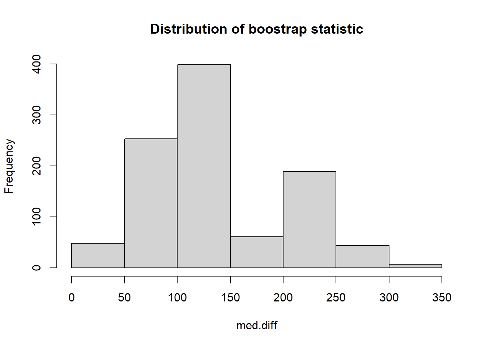

#Create a table (in HTML or PDF) that shows the differences in median (with the BCa bootstrap
#95% confidence intervals) maternal, infant, neonatal, and under-5 mortality between the
#countries exposed to versus not exposed to armed conflict for the year 2017. Be specific about
#the sample sizes used in each statistic. The table should be fully reproducible. Push the
#script that creates the table to your GitHub repository.boostrap
#Instructions
#Clear history
#clear history
rm(list=ls(all=T)) #Load Libraries
#load libraries
library(dplyr)Warning: package 'dplyr' was built under R version 4.2.3
Attaching package: 'dplyr'The following objects are masked from 'package:stats':
filter, lagThe following objects are masked from 'package:base':
intersect, setdiff, setequal, unionlibrary(tidyr)Warning: package 'tidyr' was built under R version 4.2.3library(here)Warning: package 'here' was built under R version 4.2.3here() starts at C:/Users/paija/OneDrive/Desktop/armed_conflictlibrary(boot)
library(tidyverse)Warning: package 'tidyverse' was built under R version 4.2.3Warning: package 'ggplot2' was built under R version 4.2.3Warning: package 'tibble' was built under R version 4.2.3Warning: package 'readr' was built under R version 4.2.3Warning: package 'purrr' was built under R version 4.2.3Warning: package 'stringr' was built under R version 4.2.3Warning: package 'forcats' was built under R version 4.2.3Warning: package 'lubridate' was built under R version 4.2.3── Attaching core tidyverse packages ──────────────────────── tidyverse 2.0.0 ──
✔ forcats 1.0.0 ✔ readr 2.1.4
✔ ggplot2 3.4.2 ✔ stringr 1.5.0
✔ lubridate 1.9.2 ✔ tibble 3.2.1
✔ purrr 1.0.1 ── Conflicts ────────────────────────────────────────── tidyverse_conflicts() ──
✖ dplyr::filter() masks stats::filter()
✖ dplyr::lag() masks stats::lag()
ℹ Use the conflicted package (<http://conflicted.r-lib.org/>) to force all conflicts to become errorslibrary(knitr)
library(flextable)Warning: package 'flextable' was built under R version 4.2.3
Attaching package: 'flextable'
The following object is masked from 'package:purrr':
compose#Load datasets
#load final data
data <- read.csv(here("clean", "final_data.csv"), header = TRUE)
data2017 <- data %>%
filter(year == 2017) %>%
drop_na(Maternal.Mortality.rate, Infant.mortality.rate, Under.5.mortality.rate, Neonatal.mortality.rate)
# Subset the Data Frame for the year 2017
matmor.arm1 <- data %>%
filter(year==2017 & !is.na(Maternal.Mortality.rate) & armconf1 ==1) %>%
select(country_name, Maternal.Mortality.rate)
matmor.arm0 <- data %>%
filter(year==2017 & !is.na(Maternal.Mortality.rate) & armconf1 ==0) %>%
select(country_name, Maternal.Mortality.rate)#Perform bootstrap (traditional method)
B <- 1000
med.diff <- rep(NA, B)
for(b in 1:B){
resample.arm1 <- matmor.arm1[sample(nrow(matmor.arm1), size = nrow(matmor.arm1), replace = TRUE),]
resample.arm0 <- matmor.arm0[sample(nrow(matmor.arm0), size = nrow(matmor.arm0), replace = TRUE),]
med.diff[b] <- median(resample.arm1$Maternal.Mortality.rate) - median(resample.arm0$Maternal.Mortality.rate)
}
head(resample.arm1, 12) country_name Maternal.Mortality.rate
8 Burkina Faso 320
31 Myanmar 250
33 Nigeria 917
43 Thailand 37
28 Mali 562
45 Turkey 17
12 Chad 1140
34 Pakistan 140
20 France 8
43.1 Thailand 37
24 Jordan 46
34.1 Pakistan 140##histogram of bootstrap distribution
hist(med.diff, main = "Distribution of boostrap statistic")
#Bootstrap using Boot package ##maternal mortality
getmeddiff <- function(data, indices) {
sample_data <- data[indices, ]
group_meds <- tapply(sample_data$Maternal.Mortality.rate, sample_data$armconf1, FUN = median)
med.diff <- group_meds[2] - group_meds[1]
return(med.diff)
}
bootout_mat <- boot(data2017, statistic = getmeddiff, strata = data2017$armconf1, R=1000)
bootout_mat
STRATIFIED BOOTSTRAP
Call:
boot(data = data2017, statistic = getmeddiff, R = 1000, strata = data2017$armconf1)
Bootstrap Statistics :
original bias std. error
t1* 125 19.411 65.27786###bootstrap statistics
#get confidence intervals
mat_ci <- boot.ci(boot.out = bootout_mat, conf = 0.95, type = "bca")
#bootstrap statistics for matmor: t1= 126.5, bias= 14.4095, SE= 64.77766, CI= 43.8, 290.3)##Infant Mortality
#bootstrap for infant mor
getmeddiff <- function(data, indices) {
sample_data <- data[indices, ]
group_meds <- tapply(sample_data$Infant.mortality.rate, sample_data$armconf1, FUN = median)
med.diff <- group_meds[2] - group_meds[1]
return(med.diff)
}
bootout_infant <- boot(data2017, statistic = getmeddiff, strata = data2017$armconf1, R=1000)
bootout_infant
STRATIFIED BOOTSTRAP
Call:
boot(data = data2017, statistic = getmeddiff, R = 1000, strata = data2017$armconf1)
Bootstrap Statistics :
original bias std. error
t1* 19.8 -1.0346 6.003316###bootstrap statistics
#get confidence intervals
infant_ci <- boot.ci(boot.out = bootout_infant, conf = 0.95, type = "bca")
#bootstrap statistics for infant mor: t1= 19.8, bias= -0.9521, SE= 5.943379, CI= 6.60, 29.16)##Under 5 Mortality
#bootstrap for under-5 mor
getmeddiff <- function(data, indices) {
sample_data <- data[indices, ]
group_meds <- tapply(sample_data$Under.5.mortality.rate, sample_data$armconf1, FUN = median)
med.diff <- group_meds[2] - group_meds[1]
return(med.diff)
}
bootout_under5 <- boot(data2017, statistic = getmeddiff, strata = data2017$armconf1, R=1000)
bootout_under5
STRATIFIED BOOTSTRAP
Call:
boot(data = data2017, statistic = getmeddiff, R = 1000, strata = data2017$armconf1)
Bootstrap Statistics :
original bias std. error
t1* 28.9 -2.6261 9.420962###bootstrap statistics
#get confidence intervals
under5_ci <- boot.ci(boot.out = bootout_under5, conf = 0.95, type = "bca")
#bootstrap statistics for Under mor: t1= 28.9, bias= -3.0935, SE= 9.678971, CI= 8.97, 45.68)##Neonatal Mortality
#bootstrap for neomor
getmeddiff <- function(data, indices) {
sample_data <- data[indices, ]
group_meds <- tapply(sample_data$Neonatal.mortality.rate, sample_data$armconf1, FUN = median)
med.diff <- group_meds[2] - group_meds[1]
return(med.diff)
}
bootout_neo <- boot(data2017, statistic = getmeddiff, strata = data2017$armconf1, R=1000)
bootout_neo
STRATIFIED BOOTSTRAP
Call:
boot(data = data2017, statistic = getmeddiff, R = 1000, strata = data2017$armconf1)
Bootstrap Statistics :
original bias std. error
t1* 12.4 -1.0904 3.41559###boostrap statistics
#get confidence intervals
neo_ci <- boot.ci(boot.out = bootout_neo, conf = 0.95, type = "bca")
#bootstrap statistics for neomor: t1= 12.4, bias= -0.8052, SE= 3.455128, CI= 5.4, 20.1)#TABLE ## Create a data frame for each variable
table0 <- data.frame(
Mortality_Group = c('maternal', 'infant', 'neonatal', 'under5'),
Median_Difference = c(bootout_mat$t0, bootout_infant$t0, bootout_under5$t0, bootout_neo$t0),
Confidence_Interval_lower = c(mat_ci$bca[4], infant_ci$bca[4], under5_ci$bca[4], neo_ci$bca[4]),
Confidence_Interval_upper = c(mat_ci$bca[5], infant_ci$bca[5], under5_ci$bca[5], neo_ci$bca[5]),
n = c(sum(!is.na(data2017$Maternal.Mortality.rate)), sum(!is.na(data2017$Neonatal.mortality.rate)), sum(!is.na(data2017$Under.5.mortality.rate)), sum(!is.na(data2017$Infant.mortality.rate)))
)
tablefunction (..., exclude = if (useNA == "no") c(NA, NaN), useNA = c("no",
"ifany", "always"), dnn = list.names(...), deparse.level = 1)
{
list.names <- function(...) {
l <- as.list(substitute(list(...)))[-1L]
if (length(l) == 1L && is.list(..1) && !is.null(nm <- names(..1)))
return(nm)
nm <- names(l)
fixup <- if (is.null(nm))
seq_along(l)
else nm == ""
dep <- vapply(l[fixup], function(x) switch(deparse.level +
1, "", if (is.symbol(x)) as.character(x) else "",
deparse(x, nlines = 1)[1L]), "")
if (is.null(nm))
dep
else {
nm[fixup] <- dep
nm
}
}
miss.use <- missing(useNA)
miss.exc <- missing(exclude)
useNA <- if (miss.use && !miss.exc && !match(NA, exclude,
nomatch = 0L))
"ifany"
else match.arg(useNA)
doNA <- useNA != "no"
if (!miss.use && !miss.exc && doNA && match(NA, exclude,
nomatch = 0L))
warning("'exclude' containing NA and 'useNA' != \"no\"' are a bit contradicting")
args <- list(...)
if (length(args) == 1L && is.list(args[[1L]])) {
args <- args[[1L]]
if (length(dnn) != length(args))
dnn <- paste(dnn[1L], seq_along(args), sep = ".")
}
if (!length(args))
stop("nothing to tabulate")
bin <- 0L
lens <- NULL
dims <- integer()
pd <- 1L
dn <- NULL
for (a in args) {
if (is.null(lens))
lens <- length(a)
else if (length(a) != lens)
stop("all arguments must have the same length")
fact.a <- is.factor(a)
if (doNA)
aNA <- anyNA(a)
if (!fact.a) {
a0 <- a
op <- options(warn = 2)
a <- factor(a, exclude = exclude)
options(op)
}
add.na <- doNA
if (add.na) {
ifany <- (useNA == "ifany")
anNAc <- anyNA(a)
add.na <- if (!ifany || anNAc) {
ll <- levels(a)
if (add.ll <- !anyNA(ll)) {
ll <- c(ll, NA)
TRUE
}
else if (!ifany && !anNAc)
FALSE
else TRUE
}
else FALSE
}
if (add.na)
a <- factor(a, levels = ll, exclude = NULL)
else ll <- levels(a)
a <- as.integer(a)
if (fact.a && !miss.exc) {
ll <- ll[keep <- which(match(ll, exclude, nomatch = 0L) ==
0L)]
a <- match(a, keep)
}
else if (!fact.a && add.na) {
if (ifany && !aNA && add.ll) {
ll <- ll[!is.na(ll)]
is.na(a) <- match(a0, c(exclude, NA), nomatch = 0L) >
0L
}
else {
is.na(a) <- match(a0, exclude, nomatch = 0L) >
0L
}
}
nl <- length(ll)
dims <- c(dims, nl)
if (prod(dims) > .Machine$integer.max)
stop("attempt to make a table with >= 2^31 elements")
dn <- c(dn, list(ll))
bin <- bin + pd * (a - 1L)
pd <- pd * nl
}
names(dn) <- dnn
bin <- bin[!is.na(bin)]
if (length(bin))
bin <- bin + 1L
y <- array(tabulate(bin, pd), dims, dimnames = dn)
class(y) <- "table"
y
}
<bytecode: 0x00000205bebcec78>
<environment: namespace:base>table <- flextable(table0)
table <- add_header_row(
x = table, values = c("Median Difference in Mortality between Countries exposed to vs not exposed to Armed Conflict in 2017"),
colwidths = c(5))
table <- theme_box(table)
tableMedian Difference in Mortality between Countries exposed to vs not exposed to Armed Conflict in 2017 | ||||
|---|---|---|---|---|
Mortality_Group | Median_Difference | Confidence_Interval_lower | Confidence_Interval_upper | n |
maternal | 125.0 | 40.000000 | 275.24991 | 182 |
infant | 19.8 | 7.187426 | 30.05279 | 182 |
neonatal | 28.9 | 8.118561 | 44.60000 | 182 |
under5 | 12.4 | 6.400000 | 20.50000 | 182 |